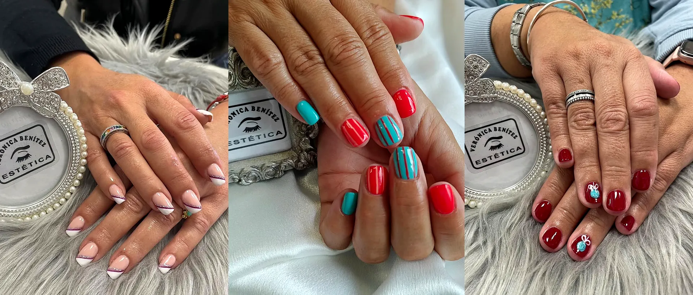
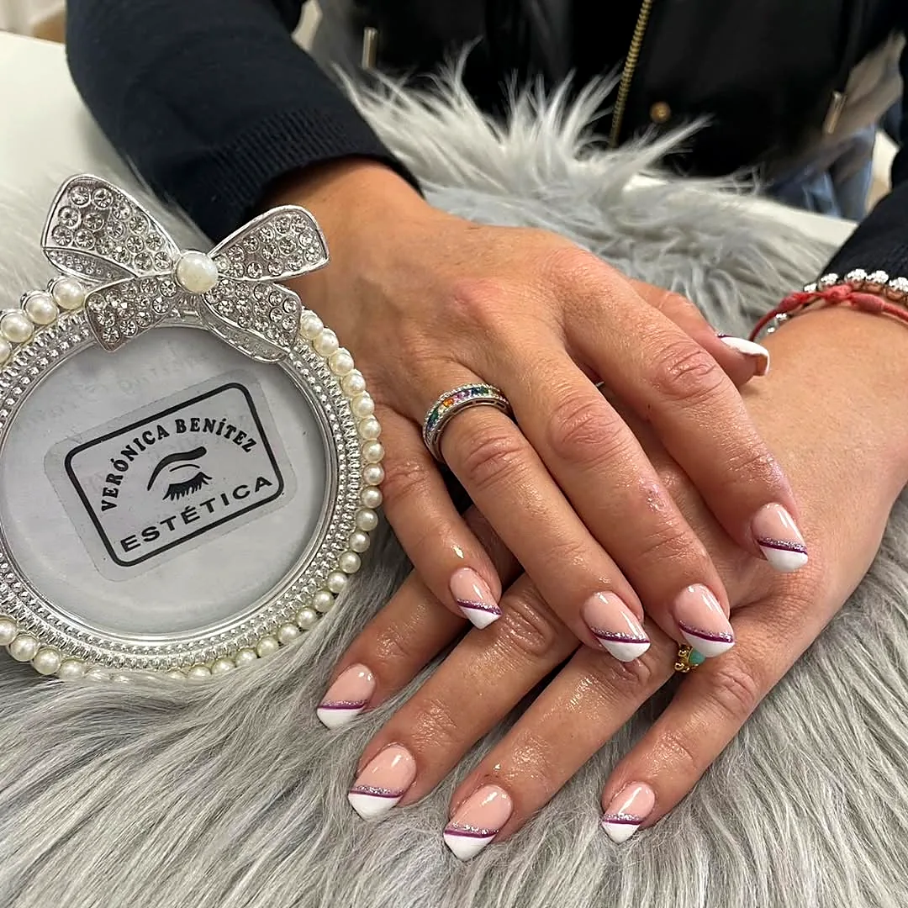
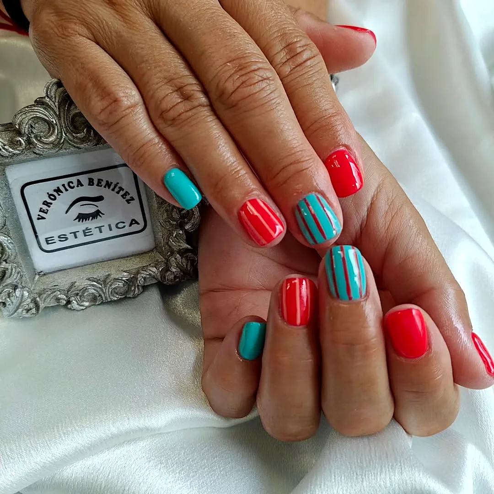

Manicura tradicional
Cuidado completo con esmaltado en laca de uñas normal.
Consultar esta opción
Manos y pies · Manicura
Cutículas, limado, forma y un esmaltado impecable: con laca de toda la vida o semipermanente secado en lámpara para que el brillo te dure semanas.
Manos y pies
La manicura es nuestro servicio más querido y el que más clientas repiten cada mes. Empieza siempre igual: miramos tus manos, cómo tienes la uña natural y la cutícula, y te preguntamos qué te apetece. A partir de ahí, limamos, damos forma (cuadrada, redonda, almendrada…), trabajamos la cutícula con mimo y preparamos la uña para el color.
En la manicura tradicional usamos laca de uñas normal: perfecta si te gusta cambiar de color a menudo o si prefieres retirarla en casa. En la semipermanente aplicamos un esmalte de larga duración que se cura en lámpara: sale seco, no se desconcha a los dos días y conserva el brillo durante semanas.
Y si te apetece algo más, la combinamos con nail art a mano alzada o con un baño de parafina para hidratar en profundidad. Es lo que más dicen nuestras clientas: que salen contentas cada vez.
Las uñas son como el punto final de una frase: completan tu look.

«La verdad es que salgo muy contenta cada vez que me hago la manicura. Las chicas son muy amables y trabajan con mucho cuidado.»
Por qué elegirlo
Desliza
Trabajamos la cutícula con cuidado, sin agredir, para que la uña crezca sana y el esmalte quede limpio.
Cuadrada, redonda, ovalada o almendra: elegimos la forma que favorece a tu mano y a tu día a día.
El semipermanente sale totalmente seco de la lámpara y aguanta el ritmo diario sin desconcharse.
Una carta de esmaltes enorme: nudes, rojos de siempre, flúor de verano o glitter para Navidad.
Retiramos el semipermanente anterior sin dañar la uña natural antes de volver a esmaltar.
Un salón pequeñito y acogedor donde desconectar mientras te cuidamos las manos.
¿Es para mí?
Paso a paso
Retiramos el esmalte anterior y vemos cómo está tu uña natural.
Igualamos largos y damos la forma que hayas elegido.
Ablandamos y trabajamos la cutícula para dejar un contorno limpio.
Base, color y top: con laca tradicional o semipermanente curado en lámpara.
Aceite de cutículas y crema para que salgas con las manos suaves.
Elige
Cada opción tiene su botón: abre WhatsApp con el mensaje escrito para que te informemos de precio y disponibilidad.
Desliza
Cuidado completo con esmaltado en laca de uñas normal.
Consultar esta opciónEsmalte de larga duración curado en lámpara, con brillo de semanas.
Consultar esta opciónTu color favorito con uno o varios dedos decorados a mano alzada.
Consultar esta opciónAñade un baño de parafina caliente para nutrir manos secas.
Consultar esta opciónConsejos de Vero
Usa guantes para fregar y limpiar: el agua caliente y los productos de limpieza son el mayor enemigo del esmalte.
Aplica aceite de cutículas cada noche: hidrata la uña y mantiene el contorno bonito.
No uses las uñas como herramienta para abrir latas o despegar etiquetas.
Si se levanta un borde, no lo arranques: pide cita y lo retiramos sin dañar la uña natural.
Repite cada dos o tres semanas para mantener el semipermanente perfecto.

Hablemos claro
Mito«El semipermanente estropea la uña.»
RealidadLo que daña la uña es una retirada brusca. Retirado correctamente y con la uña bien preparada, no tiene por qué debilitarla.
Mito«La lámpara no hace falta, se seca solo.»
RealidadEl semipermanente necesita curarse en lámpara: es lo que le da dureza y ese brillo duradero.
Dudas frecuentes
¿No encuentras tu respuesta? Escríbenos y te contestamos encantadas.
Preguntar por WhatsAppPor lo general, entre dos y tres semanas en perfecto estado, según el crecimiento de tu uña y tu ritmo diario.
Sí. Antes de volver a esmaltar retiramos el producto anterior con cuidado para no dañar tu uña natural.
Claro. Tenemos una carta muy amplia de colores y te aconsejamos según la temporada, tu tono de piel o tu evento.
Depende de si es tradicional, semipermanente o con diseño. Al pedir cita cuéntanos qué quieres y te reservamos el tiempo justo.
En el centro los servicios se abonan en efectivo.
Reserva
Trabajamos solo con cita previa. Mañanas de lunes, martes, jueves y viernes; tardes de martes, miércoles y jueves.
Consultando horario…
Combina bien con
Escríbenos por WhatsApp y te contestamos en cuanto terminemos con la clienta que está en cabina.